Продолжаем изучать деление. В этом уроке мы познакомимся с такими понятиями, как НОД и НОК.
НОД — это наибольший общий делитель.
НОК — это наименьшее общее кратное.
Тема довольно скучная, но разобраться в ней нужно обязательно. Не понимая этой темы, не получится эффективно работать с дробями, которые являются настоящей преградой в математике.
Содержание урока- Наибольший общий делитель
- Второй способ нахождения НОД
- Третий способ нахождения НОД
- Нахождение НОД для нескольких чисел
- Наименьшее общее кратное
- Второй способ нахождения НОК
- Третий способ нахождения НОК
- Задания для самостоятельного решения
Наибольший общий делитель
Наибольшим общим делителем чисел a и b называется наибольшее число, на которое a и b делятся без остатка.
Чтобы хорошо понять это определение, подставим вместо переменных a и b любые два числа. Например, вместо переменной a подставим число 12, а вместо переменной b — число 9. Теперь попробуем прочитать это определение:
Наибольшим общим делителем чисел 12 и 9 называется наибольшее число, на которое 12 и 9 делятся без остатка.
Из определения понятно, что речь идёт об общем делителе чисел 12 и 9. Причем делитель является наибольшим из всех существующих делителей. Этот наибольший общий делитель (НОД) нужно найти.
Для нахождения наибольшего общего делителя двух чисел, используется три способа. Первый способ довольно трудоёмкий, но зато позволяет хорошо понять суть темы и прочувствовать весь ее смысл.
Второй и третий способы довольны просты и дают возможность быстро найти НОД. Рассмотрим все три способа. А какой применять на практике — выбирать вам.
Первый способ заключается в поиске всех возможных делителей двух чисел и в выборе наибольшего из них. Рассмотрим этот способ на следующем примере: найти наибольший общий делитель чисел 12 и 9.
Сначала найдём все возможные делители числа 12. Для этого разделим 12 на все делители в диапазоне от 1 до 12. Если делитель позволит разделить 12 без остатка, то мы будем выделять его синим цветом и в скобках делать соответствующее пояснение.
12 : 1 = 12
(12 разделилось на 1 без остатка, значит 1 является делителем числа 12)
12 : 2 = 6
(12 разделилось на 2 без остатка, значит 2 является делителем числа 12)
12 : 3 = 4
(12 разделилось на 3 без остатка, значит 3 является делителем числа 12)
12 : 4 = 3
(12 разделилось на 4 без остатка, значит 4 является делителем числа 12)
12 : 5 = 2 (2 в остатке)
(12 не разделилось на 5 без остатка, значит 5 не является делителем числа 12)
12 : 6 = 2
(12 разделилось на 6 без остатка, значит 6 является делителем числа 12)
12 : 7 = 1 (5 в остатке)
(12 не разделилось на 7 без остатка, значит 7 не является делителем числа 12)
12 : 8 = 1 (4 в остатке)
(12 не разделилось на 8 без остатка, значит 8 не является делителем числа 12)
12 : 9 = 1 (3 в остатке)
(12 не разделилось на 9 без остатка, значит 9 не является делителем числа 12)
12 : 10 = 1 (2 в остатке)
(12 не разделилось на 10 без остатка, значит 10 не является делителем числа 12)
12 : 11 = 1 (1 в остатке)
(12 не разделилось на 11 без остатка, значит 11 не является делителем числа 12)
12 : 12 = 1
(12 разделилось на 12 без остатка, значит 12 является делителем числа 12)
Теперь найдём делители числа 9. Для этого проверим все делители от 1 до 9
9 : 1 = 9
(9 разделилось на 1 без остатка, значит 1 является делителем числа 9)
9 : 2 = 4 (1 в остатке)
(9 не разделилось на 2 без остатка, значит 2 не является делителем числа 9)
9 : 3 = 3
(9 разделилось на 3 без остатка, значит 3 является делителем числа 9)
9 : 4 = 2 (1 в остатке)
(9 не разделилось на 4 без остатка, значит 4 не является делителем числа 9)
9 : 5 = 1 (4 в остатке)
(9 не разделилось на 5 без остатка, значит 5 не является делителем числа 9)
9 : 6 = 1 (3 в остатке)
(9 не разделилось на 6 без остатка, значит 6 не является делителем числа 9)
9 : 7 = 1 (2 в остатке)
(9 не разделилось на 7 без остатка, значит 7 не является делителем числа 9)
9 : 8 = 1 (1 в остатке)
(9 не разделилось на 8 без остатка, значит 8 не является делителем числа 9)
9 : 9 = 1
(9 разделилось на 9 без остатка, значит 9 является делителем числа 9)
Теперь выпишем делители обоих чисел. Числа выделенные синим цветом и являются делителями. Их и выпишем:
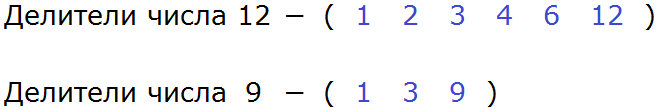
Выписав делители, можно сразу определить какой является наибольшим и общим.
Согласно определению, наибольшим общим делителем чисел 12 и 9, является число, на которое 12 и 9 делятся без остатка. Наибольшим и общим делителем чисел 12 и 9 является число 3
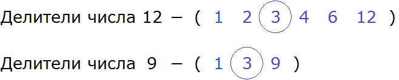
И число 12 и число 9 делятся на 3 без остатка:
\[12 : 3 = 4\]
\[9 : 3 = 3\]
Значит НОД (12 и 9) = 3
Второй способ нахождения НОД
Теперь рассмотрим второй способ нахождения наибольшего общего делителя. Суть данного способа заключается в том, чтобы разложить оба числа на простые множители и перемножить общие из них.
Пример 1. Найти НОД чисел 24 и 18
Сначала разложим оба числа на простые множители:
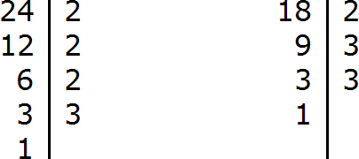
Теперь перемножим их общие множители. Чтобы не запутаться, общие множители можно подчеркнуть.
Смотрим на разложение числа 24. Первый его множитель это 2. Ищем такой же множитель в разложении числа 18 и видим, что он там тоже есть. Подчеркиваем обе двойки:
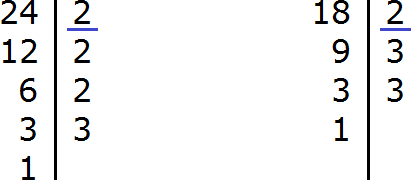
Снова смотрим на разложение числа 24. Второй его множитель тоже 2. Ищем такой же множитель в разложении числа 18 и видим, что его там второй раз уже нет. Тогда ничего не подчёркиваем.
Следующая двойка в разложении числа 24 также отсутствует в разложении числа 18.
Переходим к последнему множителю в разложении числа 24. Это множитель 3. Ищем такой же множитель в разложении числа 18 и видим, что там он тоже есть. Подчеркиваем обе тройки:
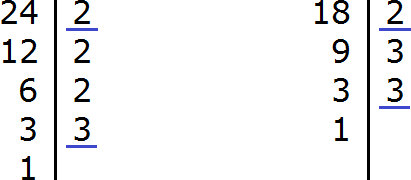
Итак, общими множителями чисел 24 и 18 являются множители 2 и 3. Чтобы получить НОД, эти множители необходимо перемножить:
\[2 \times 3 = 6\]
Значит НОД (24 и 18) = 6
Третий способ нахождения НОД
Теперь рассмотрим третий способ нахождения наибольшего общего делителя. Суть данного способа заключается в том, что числа подлежащие поиску наибольшего общего делителя раскладывают на простые множители. Затем из разложения первого числа вычеркивают множители, которые не входят в разложение второго числа. Оставшиеся числа в первом разложении перемножают и получают НОД.
Пример 1. Найти НОД чисел 28 и 16.
В первую очередь, раскладываем числа 28 и 16 на простые множители:
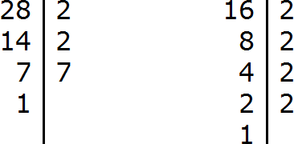
Получили два разложения:
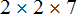
и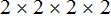
Теперь из разложения первого числа вычеркнем множители, которые не входят в разложение второго числа. В разложение второго числа не входит семёрка. Её и вычеркнем из первого разложения:
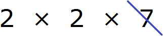
Теперь перемножаем оставшиеся множители и получаем НОД:
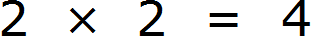
Число 4 является наибольшим общим делителем чисел 28 и 16. Оба этих числа делятся на 4 без остатка:
\[28 : 4 = 7\]
\[16 : 4 = 4\]
НОД (28 и 16) = 4
Пример 2. Найти НОД чисел 100 и 40
Раскладываем на множители число 100
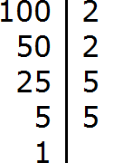
Раскладываем на множители число 40
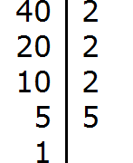
Получили два разложения: 2 × 2 × 5 × 5 и 2 × 2 × 2 × 5
Теперь из разложения первого числа вычеркнем множители, которые не входят в разложение второго числа. В разложение второго числа не входит одна пятерка (там только одна пятёрка). Её и вычеркнем из первого разложения
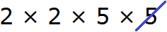
Перемножим оставшиеся числа:
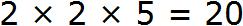
Получили ответ 20. Значит число 20 является наибольшим общим делителем чисел 100 и 40. Эти два числа делятся на 20 без остатка:
\[100 : 20 = 5\]
\[40 : 20 = 2\]
НОД (100 и 40) = 20.
Пример 3. Найти НОД чисел 72 и 128
Раскладываем на множители число 72
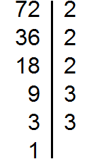
Раскладываем на множители число 128
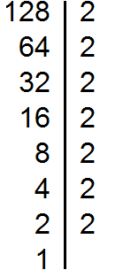
Получили два разложения: 2 × 2 × 2 × 3 × 3 и 2 × 2 × 2 × 2 × 2 × 2 × 2.Теперь из разложения первого числа вычеркнем множители, которые не входят в разложение второго числа. В разложение второго числа не входят две тройки (там их вообще нет). Их и вычеркнем из первого разложения:
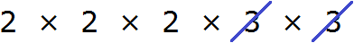
Перемножим оставшиеся числа:
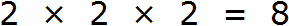
Получили ответ 8. Значит число 8 является наибольшим общим делителем чисел 72 и 128. Эти два числа делятся на 8 без остатка:
\[72 : 8 = 9\]
\[128 : 8 = 16\]
НОД (72 и 128) = 8
Нахождение НОД для нескольких чисел
Наибольший общий делитель можно находить и для нескольких чисел, а не только для двух. Для этого числа, подлежащие поиску наибольшего общего делителя, раскладывают на простые множители, затем находят произведение общих простых множителей этих чисел.
Например, найдём НОД для чисел 18, 24 и 36
Разложим на множители число 18
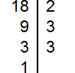
Разложим на множители число 24
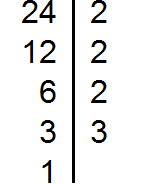
Разложим на множители число 36
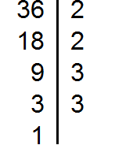
Получили три разложения:
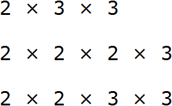
Теперь найдём и подчеркнём общие множители:
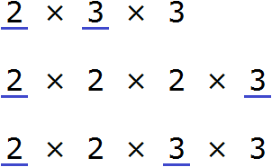
Мы видим, что общие множители для чисел 18, 24 и 36 это множители 2 и 3. Эти множители входят во все три разложения. Перемножив эти множители, мы получим НОД, который ищем:
\[2 \times 3 = 6\]
Получили ответ 6. Значит число 6 является наибольшим общим делителем чисел 18, 24 и 36. Эти три числа делятся на 6 без остатка:
\[18 : 6 = 3\]
\[24 : 6 = 4\]
\[36 : 6 = 6\]
НОД (18, 24 и 36) = 6
Пример 2. Найти НОД для чисел 12, 24, 36 и 42
Разложим на простые множители каждое число. Затем найдём произведение общих простых множителей.
Разложим на множители число 12

Разложим на множители число 24
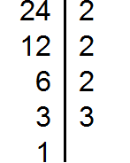
Разложим на множители число 36
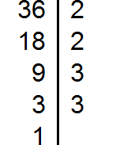
Разложим на множители число 42
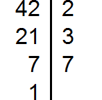
Получили четыре разложения:
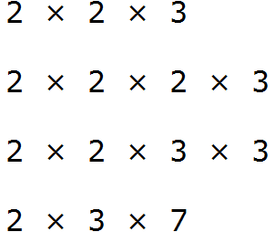
Теперь найдём и подчеркнём общие множители:
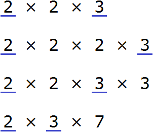
Мы видим, что общие множители для чисел 12, 24, 36, и 42 это множители 2 и 3. Перемножив эти множители, мы получим НОД, который ищем:
\[2 \times 3 = 6\]
Получили ответ 6. Значит число 6 является наибольшим общим делителем чисел 12, 24, 36 и 42. Эти числа делятся на 6 без остатка:
\[12 : 6 = 2\]
\[24 : 6 = 4\]
\[36 : 6 = 6\]
\[42 : 6 = 7\]
НОД (12, 24 , 36 и 42) = 6
Наименьшее общее кратное
Из предыдущего урока мы знаем, что если какое-то число без остатка разделилось на другое, его называют кратным этого числа.
Оказывается, кратное может быть общим у нескольких чисел. И сейчас нас будет интересовать кратное двух чисел, причем оно должно быть максимально маленьким.
Определение. Наименьшее общее кратное (НОК) чисел a и b — это наименьшее число, которое кратно a и b. Другими словами, это такое маленькое число, которое делится без остатка на число a и число b.
Определение содержит две переменные a и b. Давайте подставим вместо этих переменных любые два числа. Например, вместо переменной a подставим число 9, а вместо переменной b подставим число 12. Теперь попробуем прочитать определение:
Наименьшее общее кратное (НОК) чисел 9 и 12 — это наименьшее число, которое кратно 9 и 12. Другими словами, это такое маленькое число, которое делится без остатка на число 9 и на число 12.
Из определения понятно, что наименьшее общее кратное это наименьшее число, которое делится без остатка на 9 и на 12. Это наименьшее общее кратное требуется найти.
Для нахождения наименьшего общего кратного (НОК) можно пользоваться тремя способами. Первый способ заключается в том, что можно выписать первые кратные двух чисел, а затем выбрать среди этих кратных такое число, которое будет общим для обоих чисел и маленьким. Давайте применим этот способ.
В первую очередь, найдем первые кратные для числа 9. Чтобы найти кратные для 9, нужно эту девятку поочерёдно умножить на числа от 1 до 9. Получаемые ответы будут кратными для числа 9.
Итак, начнём. Кратные будем выделять синим цветом:
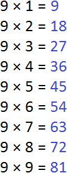
Теперь находим кратные для числа 12. Для этого поочерёдно умножим число 12 на все числа 1 до 12:
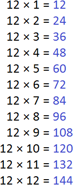
Теперь выпишем кратные обоих чисел:
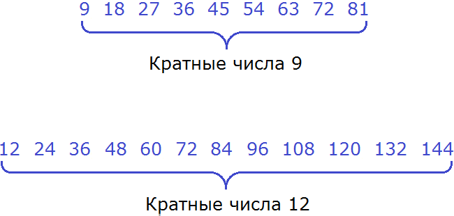
Теперь найдём общие кратные обоих чисел. Найдя, сразу подчеркнём их:
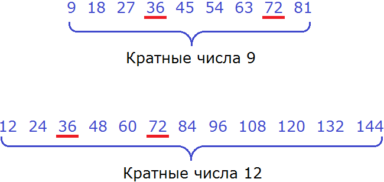
Общими кратными для чисел 9 и 12 являются кратные 36 и 72. Наименьшим же из них является 36.
Значит наименьшее общее кратное для чисел 9 и 12 это число 36. Данное число делится на 9 и 12 без остатка:
\[36 : 9 = 4\]
\[36 : 12 = 3\]
НОК (9 и 12) = 36
Второй способ нахождения НОК
Второй способ заключается в том, что числа для которых ищется наименьшее общее кратное раскладываются на простые множители. Затем выписываются множители, входящие в первое разложение, и добавляют недостающие множители из второго разложения. Полученные множители перемножают и получают НОК.
Применим данный способ для предыдущей задачи. Найдём НОК для чисел 9 и 12.
Разложим на множители число 9
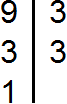
Разложим на множители число 12
Выпишем первое разложение:
Теперь допишем множители из второго разложения, которых нет в первом разложении. В первом разложении нет двух двоек. Их и допишем:
Теперь перемножаем эти множители:
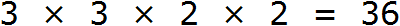
Получили ответ 36. Значит наименьшее общее кратное чисел 9 и 12 это число 36. Данное число делится на 9 и 12 без остатка:
\[36 : 9 = 4\]
\[36 : 12 = 3\]
НОК (9 и 12) = 36
Говоря простым языком, всё сводится к тому, чтобы организовать новое разложение куда входят оба разложения сразу. Разложением первого числа 9 являлись множители 3 и 3, а разложением второго числа 12 являлись множители 2, 2 и 3.
Наша задача состояла в том, чтобы организовать новое разложение куда входило бы разложение числа 9 и разложение числа 12 одновременно. Для этого мы выписали разложение первого числа и дописали туда множители из второго разложения, которых не было в первом разложении. В результате получили новое разложение 3 × 3 × 2 × 2. Нетрудно увидеть воочию, что в него одновременно входят разложение числа 9 и разложение числа 12
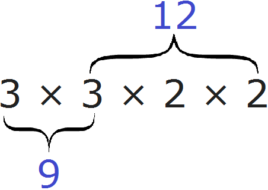
Пример 2. Найти НОК чисел 50 и 180
Разложим на множители число 50
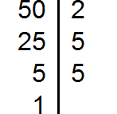
Разложим на множители число 180
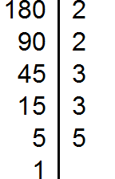
Выпишем первое разложение:
Теперь допишем множители из второго разложения, которых нет первом разложении. В первом разложении нет ещё одной двойки и двух троек. Их и допишем:
Теперь перемножаем эти множители:
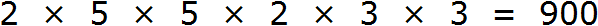
Получили ответ 900. Значит наименьшее общее кратное чисел 50 и 180 это число 900. Данное число делится на 50 и 180 без остатка:
\[900 : 50 = 18\]
\[900 : 180 = 5\]
НОК (50 и 180) = 900
Пример 3. Найти НОК чисел 8, 15 и 33
Разложим на множители число 8
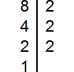
Разложим на множители число 15
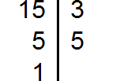
Разложим на множители число 33
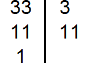
Выпишем первое разложение:
Теперь допишем множители из второго и третьего разложения, которых нет первом разложении. Допишем множители 3 и 5 из второго разложения, и множитель 11 из третьего разложения:
Теперь перемножаем эти множители:
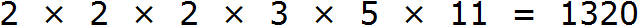
Получили ответ 1320. Значит наименьшее общее кратное чисел 8, 15 и 33 это число 1320. Данное число делится на 8, 15 и 33 без остатка:
\[1320 : 8 = 165\]
\[1320 : 15 = 88\]
\[1320 : 33 = 40\]
НОК (8, 15 и 33) = 1320
Третий способ нахождения НОК
Есть и третий способ нахождения наименьшего общего кратного. Он работает при условии, что его ищут для двух чисел и при условии, что уже найден наибольший общий делитель этих чисел.
Данный способ разумнее использовать, когда одновременно нужно найти НОД и НОК двух чисел.
К примеру, пусть требуется найти НОД и НОК чисел 24 и 12. Сначала найдем НОД этих чисел:
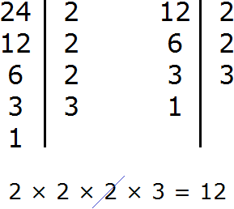
Теперь для нахождения наименьшего общего кратного чисел 24 и 12, нужно перемножить эти два числа и полученный результат разделить на их наибольший общий делитель.
Итак, перемножим числа 24 и 12
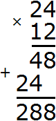
Разделим полученное число 288 на НОД чисел 24 и 12
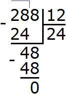
Получили ответ 24. Значит наименьшее общее кратное чисел 24 и 12 равно 24
НОК (24 и 12) = 24
Пример 2. Найти НОД и НОК чисел 36 и 48
Найдем НОД чисел 36 и 48
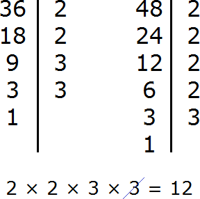
Перемножим числа 36 и 48
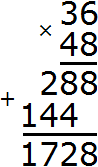
Разделим 1728 на НОД чисел 36 и 48
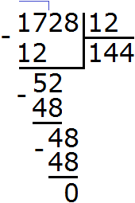
Получили 144. Значит наименьшее общее кратное чисел 36 и 48 равно 144
НОК (36 и 48) = 144
Для проверки можно найти НОК обычным вторым способом, которым мы пользовались ранее. Если мы всё сделали правильно, то должны получить 144
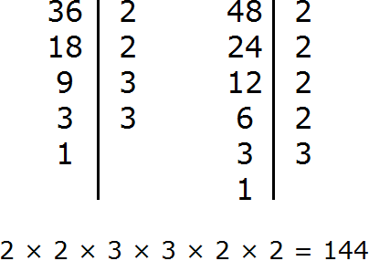
Не расстраивайтесь, если сразу не научитесь находить НОД и НОК. Главное понимать, что это такое и как оно работает. А ошибки вполне естественны на первых порах. Как говорят: «На ошибках учимся».
Задания для самостоятельного решения
Показать решение
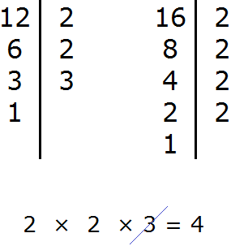
Показать решение
Показать решение
Показать решение
Показать решение
Показать решение
Показать решение
Показать решение
Показать решение
Показать решение
Показать решение
Показать решение
Показать решение
Показать решение
Показать решение
Показать решение